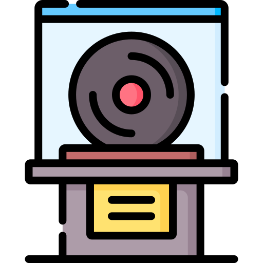
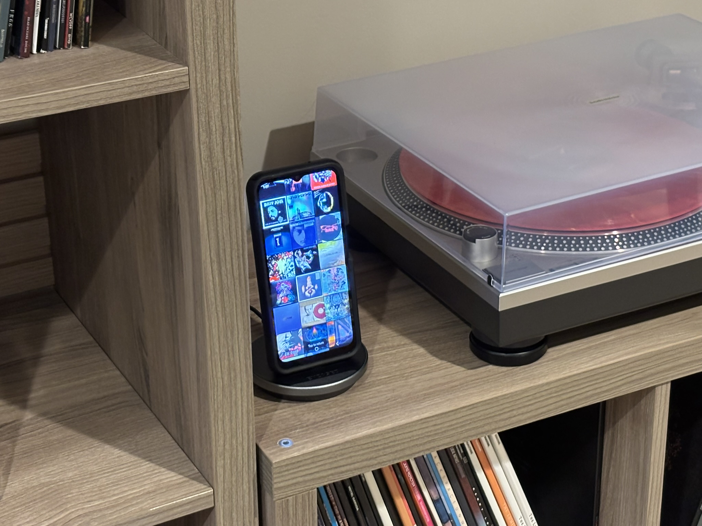
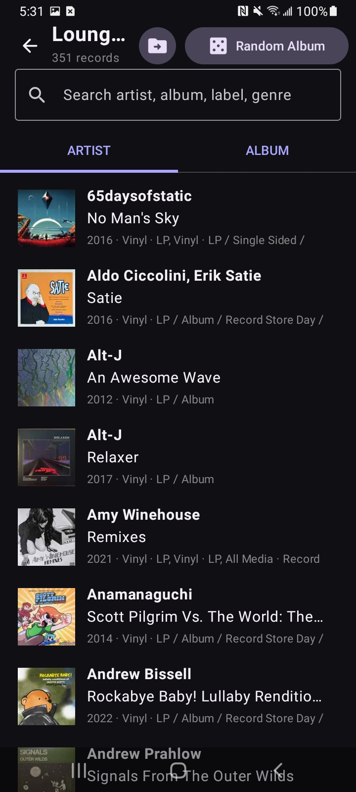
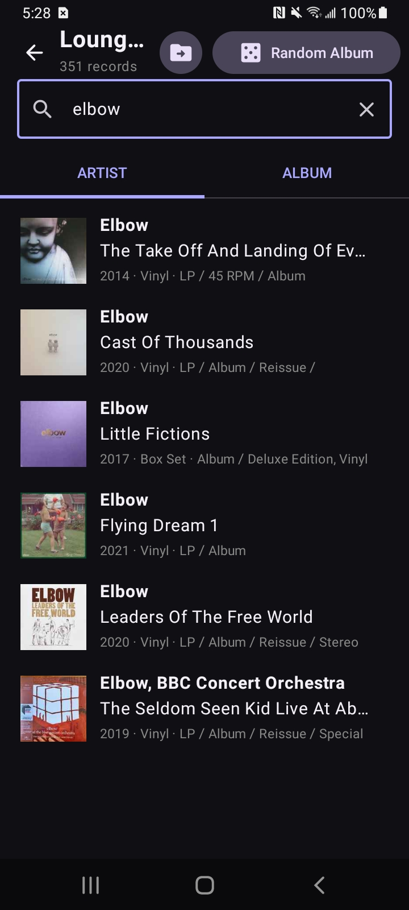
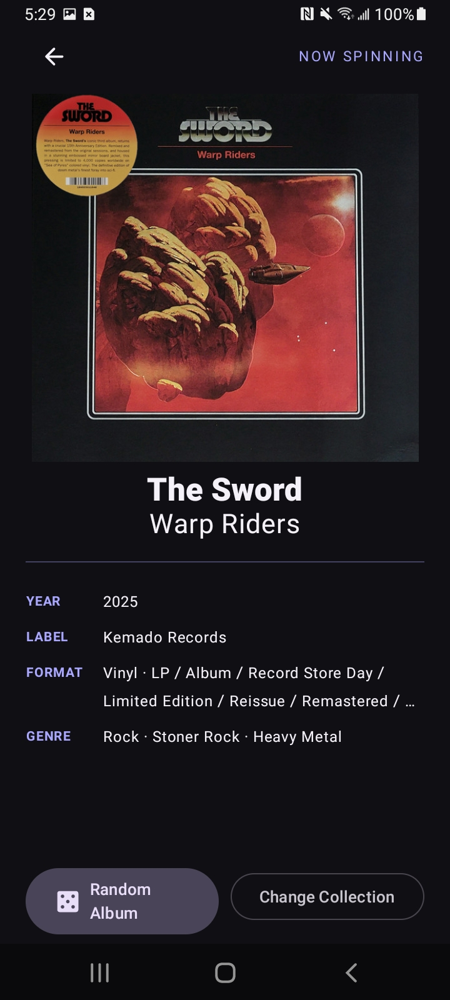
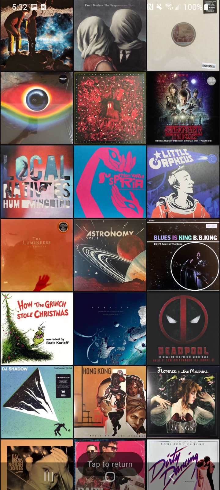

Your shelves, on screen.
Choose your Discogs folders and browse by artist or album. Search by artist, title, label, or genre to find the record you have in mind.

CogsworthA companion for your record collection
Less deciding. More listening. Cogsworth brings your Discogs collection to your Android device, right beside the turntable.
Take a look insideMade for Android · Connected to Discogs

Choose your Discogs folders and browse by artist or album. Search by artist, title, label, or genre to find the record you have in mind.
Can’t decide what to play? Pick a random album from your selected collection and give a forgotten favourite another spin.
Leave Cogsworth beside your turntable. After a minute of inactivity, a scrolling mosaic of your album covers takes over the screen.
A closer look
From finding an old favourite
to seeing your collection in a new light.

Your records, ready to explore.

A quick search. The right record.

The artwork and details, up front. A Random Album button lets fate take the proverbial aux cord and choose which record from your collection to reach for. Not satisfied? Keep tapping the button until you get something fresh!

Your collection becomes a display. After 60 seconds of idle time, a scrolling display of your collections' album covers makes the app beautiful as well as functional.
Built for the listening room
Cogsworth connects with your Discogs username and personal access token. Explore the Android app and setup instructions on GitHub.
Explore on GitHub{kind=link}
{kind=link}
{kind=link}
{kind=link}